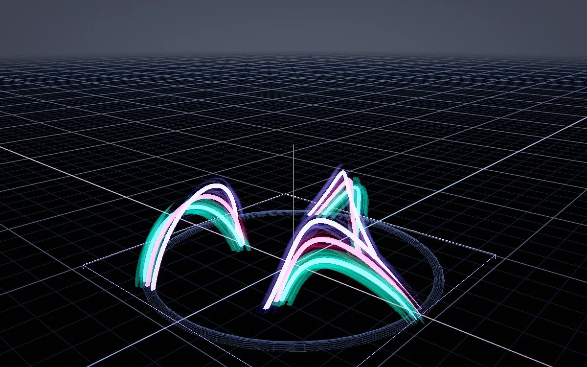
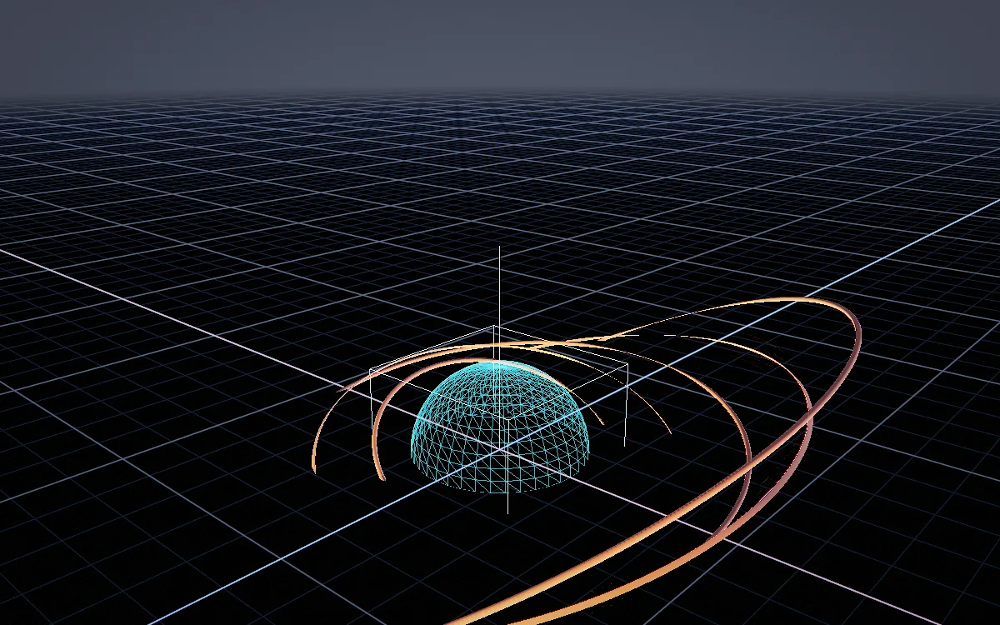
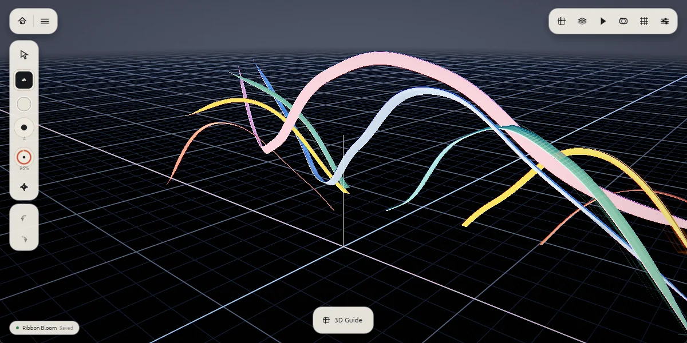
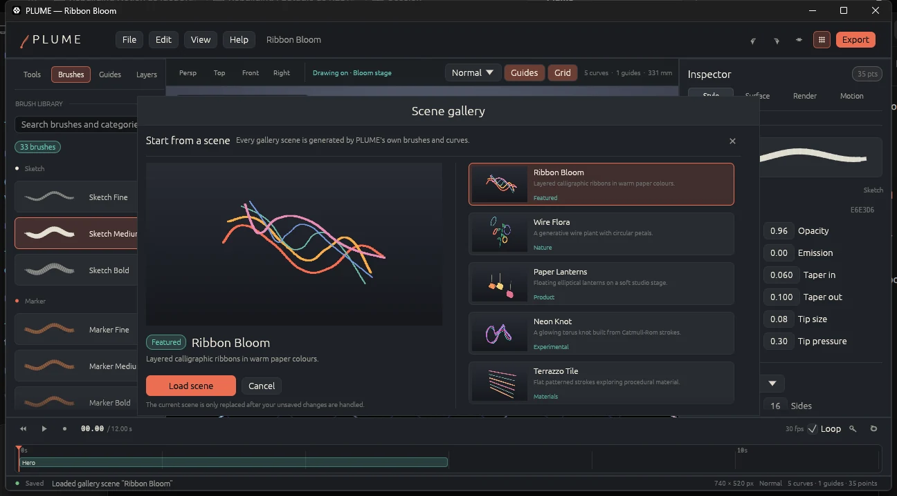
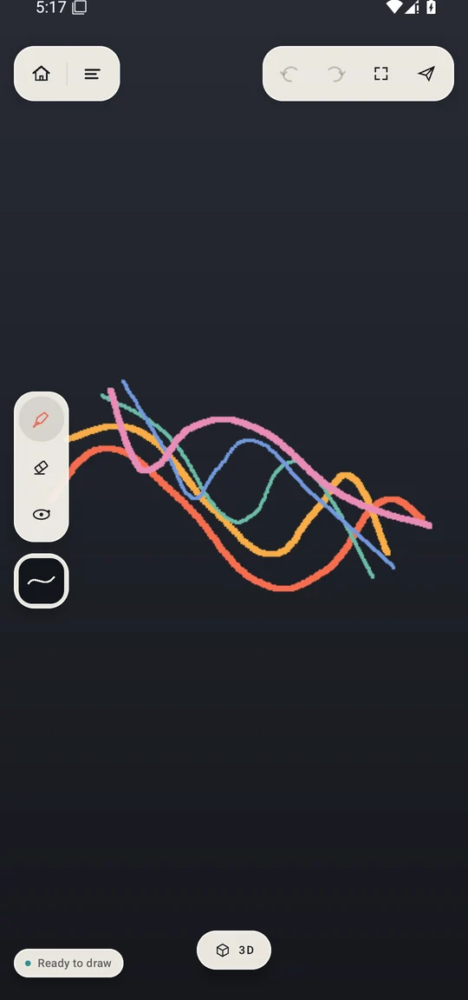

01 / BRUSHES
33 procedural brushes.
Sketch, marker, calligraphy, ink, hatch, halftone, terrazzo, stipple, smooth, rough, taper, and experimental families. Patterns are shader descriptions plus CPU sampling — no copied texture atlases.
DRAW / WRAP / LIGHT / EXPORT
Pressure-aware strokes become ribbons, tubes, and finished objects. Build on construction surfaces, light the scene like a product shot, and export the result — all from one Rust engine.

FIG. 01WINDOWS 10/11 · ANDROID 8.0+ · MIT
01 / THE STUDIO
The stroke is the primitive. PLUME gives it a frame, a surface, and a material — then stays out of the way.
Draw a curve in space and PLUME builds a rotation-minimising frame around it. Taper it with pressure, extrude it into a ribbon or tube, snap it to a guide, and keep editing the curve after the fact. The mesh is a consequence of the line, not a replacement for it.
Catmull-Rom and circular strokes, with pressure taper, round, flat, and custom cross-sections.
Plane, box, sphere, cylinder, cone, torus, freeform, loft, and imported-mesh guides.
BVH-backed picking, surface snapping, marquee selection, groups, mirror, and liquify.
Drag with a mouse, pen, or finger to draw. Faster movement produces a thinner line. Use the Reset button to clear the sketch.
02 / TOOLSET
Brushes, guides, materials, lights, cameras, and exporters share one document model. Nothing is a dead end.
01 / BRUSHES
Sketch, marker, calligraphy, ink, hatch, halftone, terrazzo, stipple, smooth, rough, taper, and experimental families. Patterns are shader descriptions plus CPU sampling — no copied texture atlases.
02 / GUIDES
Nine construction surfaces, from primitives to imported meshes. Snap strokes to the surface, then keep the guide as a visible armature.
03 / RENDER
HDR colour, depth, shadow map, studio environment, three-point lighting, ACES tone mapping, bloom, vignette, grain, chromatic aberration, sharpen, fog, depth of field, and outlines.

ACES / HDR / 3-POINT04 / ANIMATION
Turntable playback, camera keyframes, camera shots, timeline scrubbing, and GIF/MP4 capture.
05 / INTERCHANGE
Native packages, best-effort Feather interchange, and the formats your pipeline already reads.
06 / RECOVERY
Autosave writes a recovery package every 10 seconds while the document is dirty. On the next launch, recover the work or discard it.
07 / ENGINE
Document model, extrusion, picking, render data, exporters, and the UniFFI bridge are shared by the desktop and Android shells.
03 / SCENES
Every image below is rendered by PLUME's own headless renderer from PLUME curves and brushes. No third-party artwork, no stock renders.
04 / INTERFACE
PLUME opens on the artwork. The floating shell keeps only what you need within reach: brushes, colour, size and opacity on the left, quick tools at the top right, and the 3D stage guide at the bottom. Open the inspector or brush library in place; switch to the Studio workspace when you want every panel at once.
Home, menu, and quick tools float over the render instead of framing it. The artwork gets the window.
33 brushes, pressure, taper, cross-section, material, and transform open contextually from the rail.
Bring back the full tool shelf, inspector, timeline, and menus whenever the job calls for them.
Camera keyframes, shots, scrubbing, and GIF/MP4 capture from the same timeline.

CANVAS BRUSH RAIL QUICK TOOLS 3D GUIDE
SCENE GALLERY / 8 BUILT-IN SCENES05 / MOBILE
PLUME for Android is a Kotlin/Jetpack Compose shell over the same Rust document model. It carries the desktop's canvas-first language onto touch: paper chrome floating over the ink canvas, a home and menu capsule, quick undo/frame/export tools, a brush rail, and a 3D stage menu.
Debug-signed preview. Requires Android 8.0+ and a 64-bit device. ARCore placement needs a supported device and Google Play Services for AR.

06 / DOWNLOAD
Windows and Android builds of PLUME 0.1.0. Source, license, and build notes are in the repository.
The full desktop editor: 33 brushes, guides, HDR renderer, animation, and model/media export.
Download .exe 14.2 MBThe Compose editor over the same Rust engine, with a canvas-first floating shell, touch drawing, autosave, SAF export, and ARCore placement.
Download .apk 15.8 MBRust workspace, wgpu renderer, egui studio, and the Kotlin Android shell. The README has the full toolchain.
View on GitHubPLUME is an original, clean-room implementation. It does not contain Feather artwork, icons, fonts, binaries, or presets. Feather is a name owned by its respective owner and is used only to describe an optional interchange format. Read the notice ↗